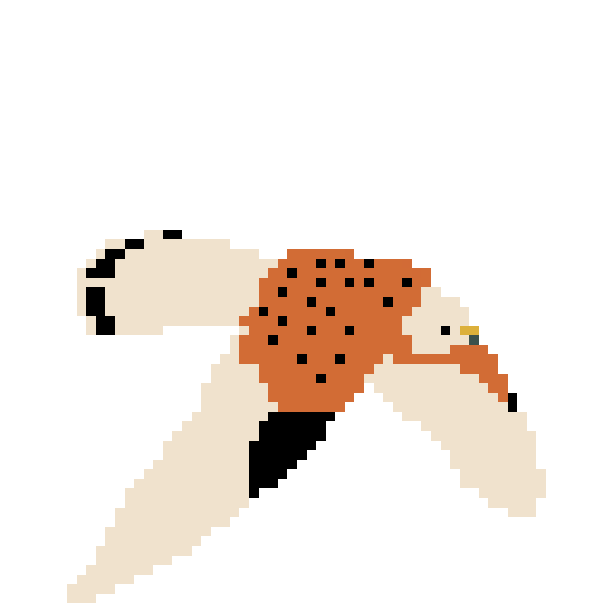
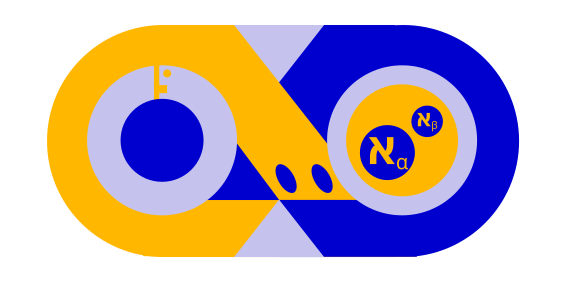
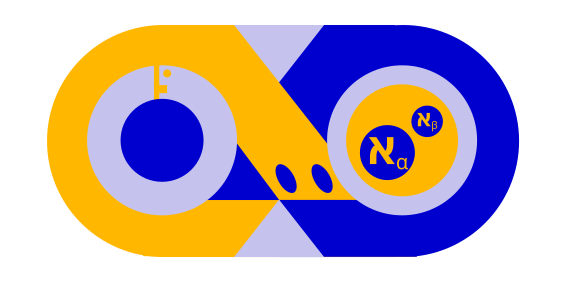
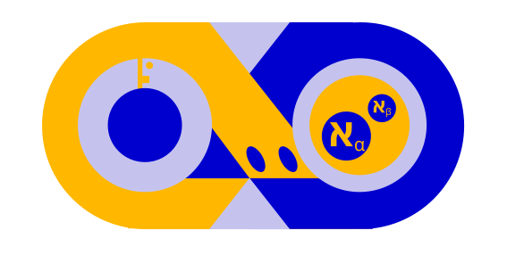

Webgrafia
Referencia de concepto y mecánicas 1
Referencia de concepto y mecánicas 2
Contextualización e historia 1
Contextualización e historia 2
Ideas y referencias para power up
Referencia y ayuda visual 1
Referencia y ayuda visual 2
Referencias para pintaderas 1
Referencias para pintaderas 2
Referencia marco

Referencia fondo
Referencia diablo
Referencia diablo y botones
Referencia roca 1
Referencia roca 2
Referencia roca 3
Referencia cristal 1
Referencia cristal 2
Referencia fondo botones
Referencia rayo


 
